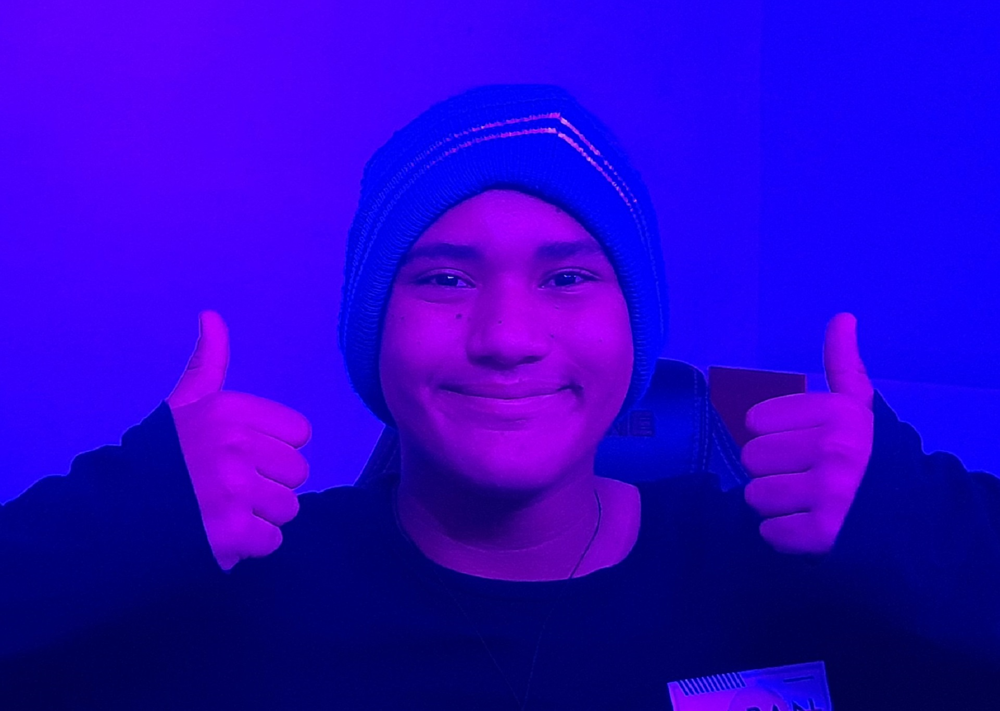

Sobre Mim
Olá, meu nome é Gabriel Alvim e eu nasci e cresci em Betim - MG
Desde pequeno eu sempre gostei muito de alguns estilos de musicas diferentes, então em 2018, um dia eu descobri uma música de um produtor brasileiro chamado de MeiaUm, a música em questão era Suicidal. Após escuta-la varias e varias vezes descobri o seu canal no Youtube.
Em um vídeo do MeiaUm ele citou o uso do programa Fl Studio, e foi aí que começou a minha jornada com a produção musical. Na época eu postei a minha primeira música no Youtube, totalmente fora do tempo e desorganizada mas como não tinha nenhum tipo de ideia de como produzir achei um máximo.
Hoje faço músicas bem diferentes do que as que eu fazia no inicio e sinto que com o tempo melhorei bastante, tenho o sonho de algum dia trabalhar com a produção musical sendo minha principal fonte de renda , caso queira apoiar meu trabalho esse é o meu canal: youtube.com/@gabzrolon